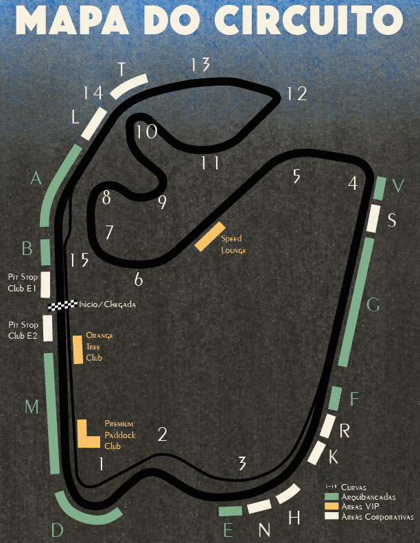
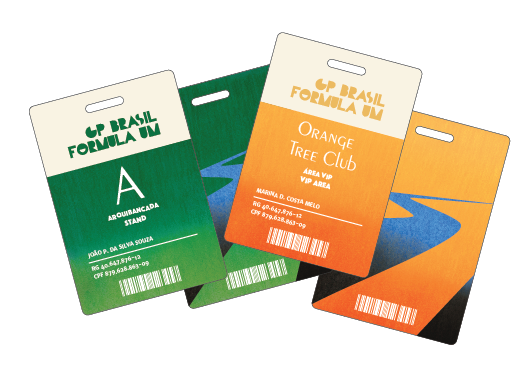

Cartaz

O cartaz do evento possui vários elementos que remetem à história da sua divulgação. As únicas cores utilizadas são verde, amarelo e azul, que são as cores nacionais, não por acaso.
A cena retratada em destaque é a hora da ultrapassagem entre dois veículos. Tal situação apresenta um grande impacto na corrida, e é um evento que ocorre do início ao fim das voltas, por isso sua importância.
Para homenagear a cidade de São Paulo, sede do evento neste ano, o cartaz possui uma moldura especial, feita exclusivamente para ele. A principal fonte de inspiração foram as calçadas presentes na metrópole, que convivem com o movimento diário dos carros.
Mapa
A pista do circuito oficial tem um total de 4,309 km de extensão. Como as provas têm em torno de 70 voltas, o percurso total de um carro fica em torno dos 300 km.
Ele possui 15 curvas, sendo uma delas conhecida como “S do Senna”, em referência a Ayrton Senna, que venceu a prova de São Paulo em 1991 e 1993.
A pista passou por várias reformas ao longo de sua existência, e a versão atual do circuito é de 2016. As arquibancadas ficam espalhadas por todo o circuito, mas as áreas VIP ficam em locais privilegiados, tal como a Largada/Chegada.
História
O GP do Brasil aconteceu pela primeira vez em 1972, e foi incorporada ao calendário anual da F1 a partir do ano seguinte. A temporada de 1978 e as entre 1981 e 1989 aconteceram no Autódromo de Jacarepaguá, no Rio de Janeiro. Todas as outras foram e serão realizadas no Autódromo de Interlagos, em São Paulo.
O Autódromo, que tem o nome oficial de Autódromo José Carlos Pace, fica no bairro de Interlagos, que recebe esse nome porque fica entre as represas Guarapiranga e Billings. É conhecido por ser sede de outros eventos de entretenimento, como o Lollapalooza. Ele foi inaugurado em 1940.
Como chegar
O Autódromo de Interlagos localiza-se na região sul de São Paulo e o endereço oficial é Av. Senador Teotônio Vilela, 261, no bairro de Interlagos – São Paulo – SP, CEP 04801-010.
Trem e ônibus
Localizada a aproximadamente seis minutos de caminhada, a estação Autódromo (Linha 9 - Esmeralda da CPTM/ Osasco-Grajaú) é uma alternativa para quem quer fugir do trânsito.
Outra opção é descer na Estação Jurubatuba e pegar um ônibus no Terminal. Veja as opções de linha no site da SPTrans. Entrada pelo Portão 7.
Bicicleta
Se você gosta de pedalar de bike, aos domingos, pode pegar a Ciclofaixa de Lazer Guarapiranga, que liga a Ciclofaixa de Lazer Sul/Oeste à Represa Guarapiranga.
Para ajudar, a estação Autódromo da CPTM (Linha 9 - Esmeralda da CPTM) possui bicicletário com 261 vagas, onde você pode guardar sua bicicleta gratuitamente. Este espaço possui iluminação, piso de concreto e segurança para controlar os acessos e preservar as bicicletas ali depositadas.
Carro e táxi
O Autódromo está localizado próximo à Marginal Pinheiros e à Av. Senador Teotônio Vilela. O estacionamento do local é gratuito, mas se houver evento, poderá estar com acesso restrito. Informe-se antes de sair de casa.
A cidade de São Paulo possui cerca de 33 mil veículos cadastrados, divididos em quatro categorias: comum, rádio-táxi, especial e luxo. Há pontos de táxi em centenas de lugares de São Paulo, principalmente próximos a hotéis e terminais urbanos. Também é possível encontrar pontos próximos ao Autódromo.
Helicóptero e avião
O Autódromo de Interlagos também possui um heliponto, que pode ser usado gratuitamente. Diversas empresas oferecem serviços de táxi aéreo.
O aeroporto mais próximo do Autódromo de Interlagos é o Aeroporto de Congonhas, também na região sul da cidade.
Ingressos
O evento tem duração de 3 dias (sexta, sábado e domingo). Neste ano, ele vai acontecer nos dias 15, 16 e 17 de novembro, sempre iniciando às 14h10, horário de Brasília.
Os ingressos vendidos contemplam toda a duração do evento, ou seja, os três dias. Confira tabela abaixo para mais informações. Nem todas as arquibancadas possuem ingressos disponíveis para venda. Consulte informações sobre meia-entrada. A venda é limitada a 5 ingressos por CPF/CNPJ.
| Setor(es) | Preço (R$) |
|---|---|
| G, Q | 610 |
| A | 870 |
| R |
1100 |
| M | 1860 |
| B | 3100 |
| Orange Tree Club | 4900 |
| Pit Stop Club 1 & 2 | 7050 |
| Speed Lounge | 16600 |
Últimas Notícias
- Coluna do Castilho - Franceses empolgados com a corrida em Paul Ricard
- Coluna do Castilho - Comissários desportivos tiram vitória da Ferrari no Canadá
- Coluna do Castilho - Hamilton atrás do recorde; Ferrari atrás da redenção